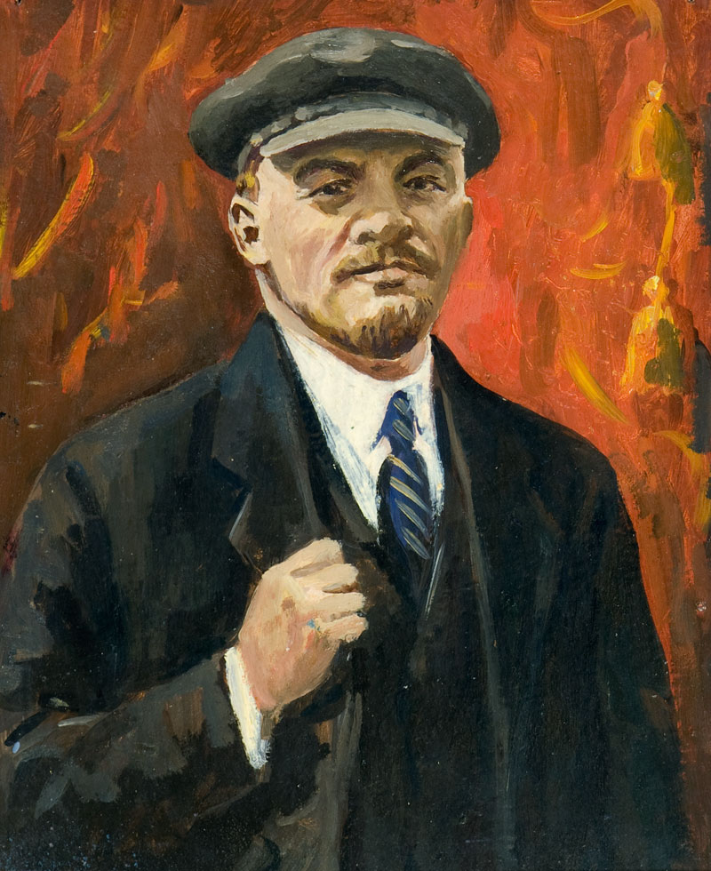
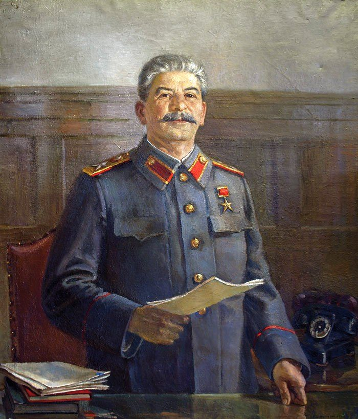
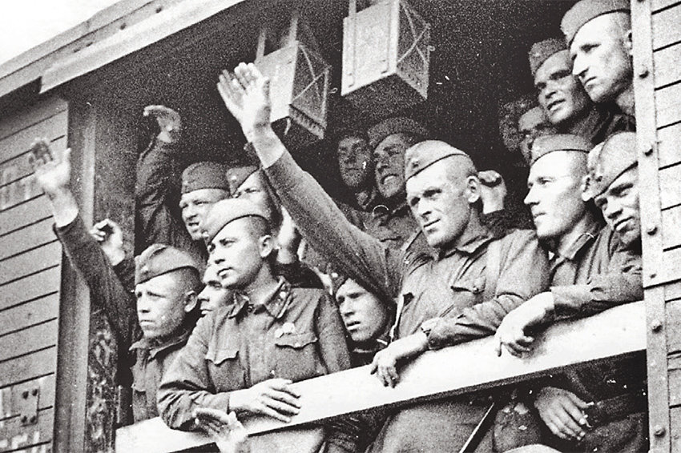
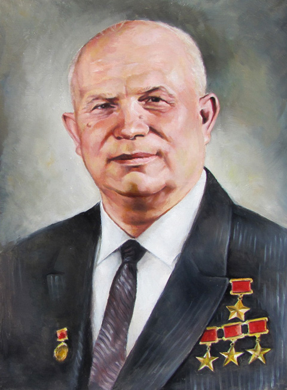
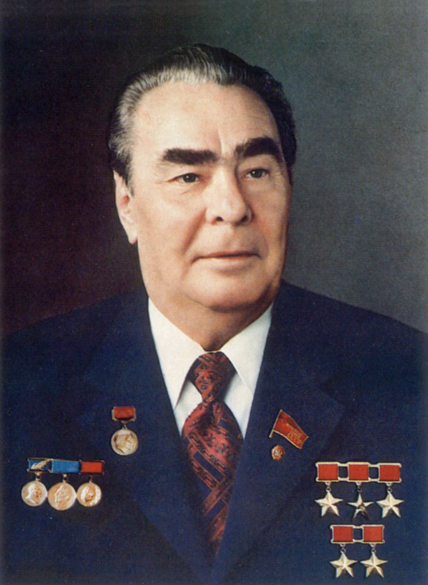
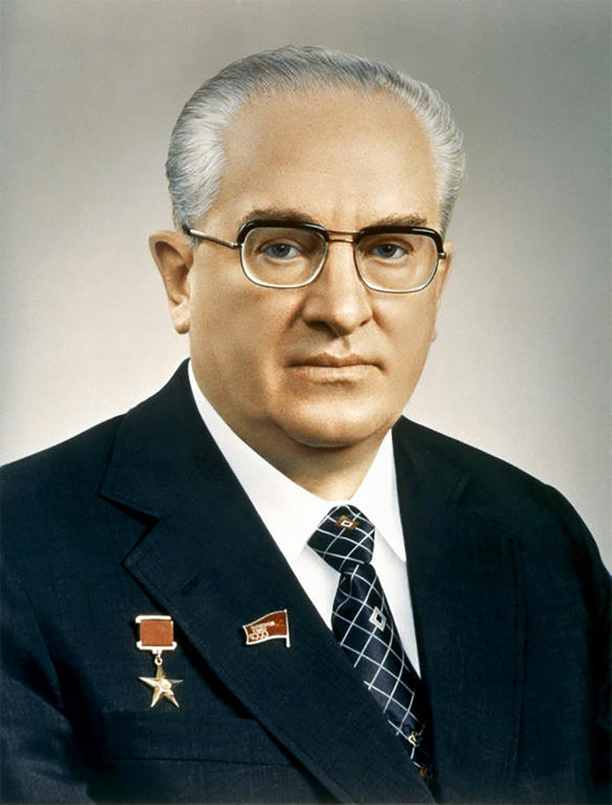
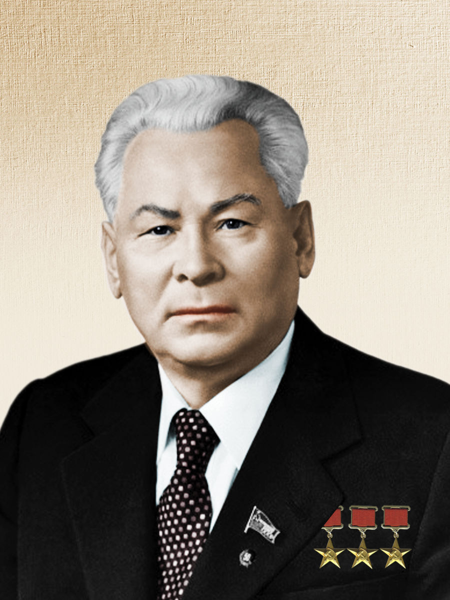
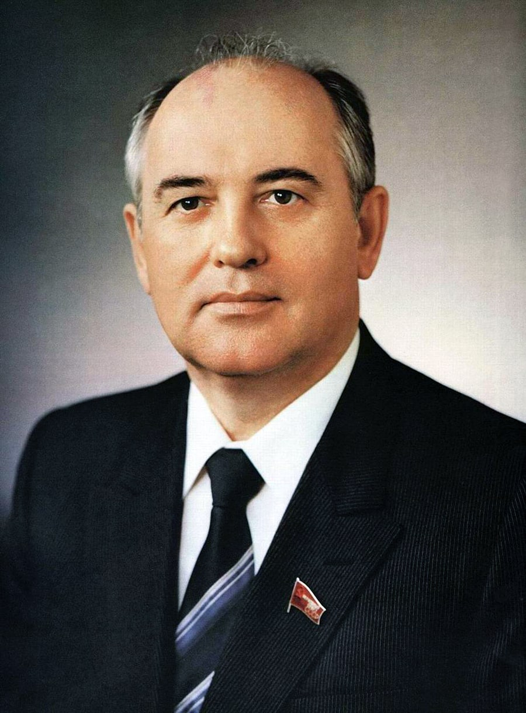
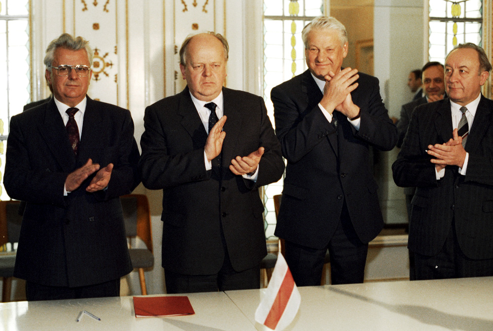

История СССР
В этом пункте будет расматриваться история СССР, начиная с Ленина В.И заканчивая Горбачевым М.С
 После свершения февральской революции, в Россию прибыл Владимир Ильич Ленин (Ульянов). Лидер большевиков направил все усилия на то, чтобы власть досталась его партии. Со своими однопартийцами он организовал октябрьскую революцию, которая сместили Временное правительство, и передала власть Советам.
Первые годы Советской власти были тяжелыми. Большевикам пришлось сражаться не только с меньшевиками и эсерами, которые после роспуска Учредительного собрания избрали силовой путь захвата власти, но и интервенцией. Страна находилась в состоянии гражданской войны, но в 1922 года Владимир Ильич Ленин (Ульянов) и партия большевиков в целом сумела победить в этой сложной политической борьбе.
Владимир Ильич Ленин (Ульянов) понимал, что на этом этапе развития России, коммунизм это недостижимая мечта, гнаться за которой могут только безумные фанатики. Ленин ввел более либеральную и демократическую и экономическую политику, получившую название НЭП (Новая Экономическая Политика). При этом большевики понимали, что НЭП в новой России мог погубить их партию и страну вообще. Для того, чтобы эта политика дала необходимые результаты, она должна проходить на фоне ужесточения политического режима. Большевики желали привить стране однопартийную систему правления. Для этого они на 10 съезде РКП(б) приняли постановление о единстве партий. Согласно этому постановлению в стране было запрещено создавать партии, которые не разделяли точку зрения большевиков. После этого с июня по август 1922 года Чрезвычайный Комитет проходил в массовом порядке открытые суды над эсерами. В июне 1923 года РКП(б) утвердило положение о борьбе с меньшевиками. В стране началась массовая анти пропаганда меньшевиков, в результате которой понятие «меньшевик» на долгие годы стало отрицательным. Таким образом, Владимир Ильич Ленин (Ульянов) добился в стране однопартийной системы.
К 1922 году Советские республики, которые формально были независимыми, желали объединиться в единое государство. Это было необходимо, поскольку экономически отдельным республикам было тяжело выжить. Кроме того, сохранялась опасность того, что поодиночке такие республики просто будут захвачены.
27 декабря 1922 года РСФСР, Белоруссия, Закавказская Федерация и Украина утвердили акт создания нового государства – СССР. 1 съезд Советов СССР 30 декабря 1922 года этот акт утвердил. В последующие годы продолжилось вступление республик в состав СССР. К 1929 году большевикам удалось практически полностью вернуть в состав страны земли, принадлежавшие Российской Империи.
Политика, проводимая большевиками, организовала в стране централизованный авторитарный режим, в котором, по сути, вся власть находилась в руках руководителя партии большевиков. Поэтому когда 21 января 1924 года Владимир Ильич Ленин (Ульянов) был убит, стране понадобился новый лидер, который бы смог продолжить выбранный путь. В СССР началась борьба за власть.
 Борьба за власть, после смерти Ленина, между Троцким и Сталиным завершилась в пользу последнего. Сталин начал строительство социализма ускоренными темпами, поскольку видел, что началось активное возвышение Германии, направленное, прежде всего, в сторону СССР.
Довоенные годы Сталина характеризуются созданием в СССР патриотической идеологии, которая в дальнейшем очень пригодилась в годы войны. Кроме того, Сталин начал формирование культа своей личности. Что же касается государственного устройства и внутреннего развития страны, то довоенные годы характеризуются массовыми репрессиями. Любой человек, несогласный с политикой вождя отправлялся в тюрьму. Суды были наделены исключительными полномочиями для рассмотрения дел по обвинению в терроризме. Был установлен, так называемый, «упрощенный характер».
Репрессии коснулись не только простых граждан, но и высшее командование армии и флота. В довоенные годы репрессиям было подвержено около сорока тысяч офицеров советской армии, причем включая высшее командование. Цифры ужасающие. Репрессии подверглись 3 маршала (из 5), 3 командира 1 ранга (из 5), 10 командиров 2 ранга (из 10), 50 командиров корпусов (из 57), 16 армейских комиссаров (из 16), 25 корпусных комиссаров (из 26), 58 дивизионных комиссаров (из 64), 401 командир полка (из 456).
В 1936 году прошел 8 съезд большевиков (5 февраля) утвердил новую Конституцию страны. В своей речи Сталин особо выделил тот факт, что в предыдущие годы была завершена первая стадия строительства коммунизма. Следующая же стадия требовала другого подхода и других законом. Поэтому Конституция, принятая на этом съезда, наделяла всех граждан страны равными правами.
В это же время шли активные преобразования в области крестьянских хозяйств. Крестьяне образовывали колхозы, которые выполняли планы руководства страны по посеву и сбору урожая. Крестьянам было разрешено иметь собственное приусадебное хозяйство. Довоенные годы характеризовались стремлением Сталина создать коалицию против Германии. Летом 1935 года 7 съезд Коминтерна утвердил внешнюю политику страны, направленную на создание единого анти немецкого фронта, который смог бы предотвратить войну. В июле 1936 года началась война в Испании. Было очевидно, что Германия и Италия проверяют свои силы на Испании. Сталин, желая помочь испанцам и по возможности отдалить войну от СССР, направляет в Испанию советские войска. Кроме того, СССР помогает Испании оружием и продовольствием, поскольку другие «цивилизованные» страны в этой помощи Испании отказали. Война в Испании завершилась в 1939 году.
Только после завершения войны в Испании, захвата Германией Австрии и Чехословакии, оккупации Албании Италией, Франция и Англия прислушались к СССР и напарили свои делегации для заключения союза. Эти приговоры были формальными, поскольку Англию и Францию представляли люди, которые не имели право подписи документов. На фоне «странных» преговоров с Англией и Франции началось сближение СССР и Германии. Это привело к заключению пакта Молотова-Риббентропа. Этот пакт о ненападении был подписан 23 августа 1939 года. Этот пакт был необходим обеим сторонам: Германии для подготовки к войне с Польшей, СССР – для того, чтобы максимально подготовиться к возможной в будущем войне. Обе стороны понимали, что это скорее перемирие, чем мир. Но именно в этом перемирии были заинтересованы и Германия и СССР.
 Ранним утром 22 июня 1941 года немецкие части перешли государственную границу СССР, а немецкая авиация нанесла первые массированные удары по важным пунктам стран. Началась Великая отечественная война 1941 - 1945 годов. Советское руководство не сразу поверило в реальность происходящего, и только к полудню с заявлением к гражданам обратился Молотов, он говорил о том, что началась война. В стране была объявлена всеобщая мобилизация.
Начиная с лета 1941Ю, до осени 1941 Великая отечественная война 1941 - 1945 годов для советской стороны складывалась крайне неудачно. Немецкие войска полностью оккупировали Прибалтику, и частично Молдову, Белоруссию и Украину. 8 сентября 1941 года началась блокада Ленинграда. 30 сентября началось массированное наступление на Москву. Немецкие части находились всего в 100 километрах от столицы СССР. Перелом наступил 5 декабря. В этот день началось советское контр наступление. Оно продолжалось 2 дня, завершившись 6 декабря. В результате на отдельных участках фронта немцы были отброшены до 250 километров назад.
В мае 1942 года красная армия устремилась в контрнаступление вблизи Харькова. Немцы нанесли советским войскам в этой битве жесткое поражение. 2 советские армии были уничтожены. Общие потери составили 230 тысяч человек убитыми.
В конце июня немецкая армия, которая после победы под Харьковом вновь получила преимущество, устремилась к Сталинграду. 28 июля был захвачен Ростов. В сентябре в Сталинграде, уде практически разрушенном, шли рукопашные битвы между сторонами. К ноябрю немцы уже не имели сил для наступления. В Сталинградской битве немцы потеряли около800 тысяч человек убитыми. 18 ноября началось наступление Советских войск. На этом Великая отечественная война 1941 - 1945 годов завершила свою первую стадию, впереди была вторая, наступательная для СССР.
18 января 1943 года частично была снята блокада Ленинграда. В феврале начались операции по освобождению Донбасса. 5 июля 1943 года немцы планировали начать наступление, но Советское командование было в курсе этой акции, и за несколько минут до начала военных действий нанесло мощный упреждающий артиллерийский удар, который сорвал немецкое наступление. 12 июля состоялось крупнейшее танковое сражение, вблизи Прохоровки. В целом в этот день немцы потерпели крупное поражение на Курской дуге. 5 августа началось наступление советских войск. Сражение на Курской дуге стоило немцам жизней 500 тысяч человек. После этого Великая отечественная война 1941 - 1945 годов перешла к своей решающей стадии.
В январе 1944 года была полностью снята блокада Ленинграда, немцы оказались отброшенными к Нарве. В феврале была освобождена вся территория правобережной Украины. В апреле красная армия выбила немцев из Крыма. 23 июня началось сильное наступление советской армии на Белорусском фронте, в ходе которого была освобождена вся Белоруссия и часть Прибалтики. В июле началось наступление на Украинском фронте, завершившееся освобождением Львова. В августе началось наступление на Кишинев. Здесь было уничтожено 252 дивизии противника. В результате к 31 августа советские войска захватили Бухарест. В сентябре и октябре была полностью освобождена Прибалтика
 К апрелю 1945 года красная армия освободила всю Европу и была вблизи Берлина. 30 апреля над Рейхстагом был установлен советский флаг. 8 мая был подписан пакт о безоговорочной капитуляции Германии. Объявлено об этом было на следующий день, 9 мая. На этом завершилась Великая отечественная война 1941 - 1945 годов.
К апрелю 1945 года красная армия освободила всю Европу и была вблизи Берлина. 30 апреля над Рейхстагом был установлен советский флаг. 8 мая был подписан пакт о безоговорочной капитуляции Германии. Объявлено об этом было на следующий день, 9 мая. На этом завершилась Великая отечественная война 1941 - 1945 годов.
Победа во второй мировой войне сулила СССР значительные перемены. Этих перемен ждали и граждане, многие из которых при освобождении Европы, увидели буржуазную жизнь, от которой раньше их отгораживал железный занавес. Жители СССР после великой отечественной войны рассчитывали, что изменения коснутся экономики, сельского хозяйства, национальной политики и многого другого. При этом подавляющее большинство было лояльным к власти, поскольку победу в войне считали заслугой Сталина. В сентябре 1945 года в СССР было отменено чрезвычайное положение, а также было объявлено о роспуске Комитета по Обороне.
В послевоенный годы в СССР начались массовые репрессии. Прежде всего, они коснулись тех, кто побывал в немецком плену. Кроме того, репрессии были направлены против народов Прибалтики, западной Украины и Белоруссии, население которых активнее всего выступали против Советской власти. Таким жестоким образом в стране наводился порядок.
СССР после великой отечественной войны кардинально изменило свою внешнюю политику. Победа СССР во второй мировой войне привела к обострению отношений СССР с США. В результате этого обострения началась холодная война. Советская власть, в послевоенный годы, усилила свое влияние на мировой арене. Многие страны мира, особенно те, которые были освобождены красной армией от фашизма, стали управляться коммунистами.
США и Англия всерьез переживали о том, что рост влияния СССР может привести к снижению их влияния на мировую политику. В результате было принято решение о создании военного блока, функцией которого будет противодействие СССР. Этот блок получил название «НАТО» и образовался в 1949 году. Американцы больше не могли тянуть с созданием НАТО, поскольку в том же году Советский Союз успешно провел испытание первой атомной бомбы. В результате обе стороны были ядерными державами. Холодная война продолжалась вплоть до смерти Сталина 5 марта 1953 года. Главным итогом послевоенных лет стало понимание сторонами того, что вопросы нужно решать мирным путем, поскольку холодная война при упорстве сторон может перерасти в вооруженную.
 После смерти Сталина, первым секретарем ЦК КПСС был избран Никита Сергеевич Хрущев. Эпоха Хрущева на начальном этапе характеризуется борьбой за власть. Активными участниками этой борьбы были: сам Хрущев, Берия и Маленков. В итоге победу в этой борьбе одержал Хрущев, который сосредоточил в своих руках все нити управления страной.
Эпоха Хрущева началась с реабилитации огромного числа заключенных. Около 1,5 миллионов человек было выпущено из тюрьмы, многие были реабилитированы посмертно. Кроме того эпоха Хрущева нуждалась в экономических изменениях. Первым об этом заявил еще в 1953 году Маленков. Им было предложено сосредоточить внимание на легкой промышленности, поскольку тяжелая к тому времени была хорошо развита. Предлагаемые Маленковым реформы эпоха Хрущева не приняла. В дальнейшем Маленков был отдален от власти и не имел возможности для реализации своих планов.
Внутренняя политика Хрущева, в первые годы управления страной, была направлена на повышения уровня сельского хозяйства. Он предлагал это сделать за счет увеличения закупочных цен со стороны государства, а также за счет освоения новых земель, прежде всего, в Сибири. В 1954 году начала проводится программа по освоению целины. Освоение целины позволило увеличить посевные площади на 42 миллиона гектар. Вместе с тем, как и обещалось, были подняты закупочные цены. Это привело к резкому росту сельского хозяйства. За 5 лет прирост продукции составил 34%. К 1959 году внутренняя политика Хрущева в области сельского хозяйства претерпела изменения. В этом году государство заставило колхозы выкупить технику, которая до этого была у них в аренде. Срок был поставлен 1 год. Цены были значительно выше рыночных цен. Колхозы были вынуждены на это пойти, поскольку без техники работать было невозможно. В результате, такая внутренняя политика Хрущева привела к тому, что за один год государство практически полностью вернуло деньги, которые вложило в развитие сельского хозяйства. Одновременно с этим Хрущев практически вдвое увеличил площади полей для засева кукурузы. В 1962 году случился продовольственный кризис. Земли целины стали увядать, урожай упал до 65%, основные поля были засеяны кукурузой. В результате в том году государство впервые было вынуждено закупать зерно заграницей.
Внутренняя политика Хрущева полностью отмела план Маленкова по развитию легкой промышленности. В стране активными темпами развивалась тяжелая промышленность и машиностроение. Ежегодно в СССР производство в этих областях увеличивалось на 10%. Но это достигалось не за счет ввода новых технологий, а главным образом за счет строительства новых заводов. В 1957 году большинство крупных предприятий были переданы в управления местным властям. Этот шаг, однако, усугубил экономическую ситуацию. Единый технологический процесс был нарушен. В результаты темпы роста экономики стали существенно снижаться. Если в 1955 году темп роста промышленности составлял 85%, то в 1965 году он составил всего 51%. Эту проблему не решил даже переход на семилетку, вместо пятилетки.
 Правление Леонида Брежнева — период в истории СССР, продолжавшийся с 14 октября 1966 года по 10 ноября 1982 года (дата смерти Брежнева). В течение этого времени советский лидер занимал сразу несколько высших партийных и государственных должностей, в том числе пост Генерального секретаря ЦК КПСС.
Это период глубоких контрастов в развитии Советского Союза, в котором уместился экономический подъем VIII пятилетки (1966-1970), превращение страны в военную и экономическую сверхдержаву, завоевание лидерских позиций в космосе, смягчение отношений с Западом. Сформировалась одна из лучших систем образования на планете, венцом которой стало обучение в вузах более 5 млн студентов.
С другой стороны, брежневский период оказался застоем в политической системе, управлявшейся узкой группой неуклонно стареющих вождей. Страна окончательно села на нефтяную иглу и пошла по откровенно экстенсивному пути развития с опорой на продажу углеводородов. Втягивание СССР в Афганскую войну стоило ухудшения отношений с Западом, а в перспективе потери международного влияния.
Брежнев был в числе инициаторов отречения экс-первого Секретаря ЦК КПСС Никиты Сергеевича Хрущева от власти осенью 1964 года. Фактически сразу была восстановлена привычная схема управления.
Вместо ранее созданных Совнархозов воссоздаются министерства, работавшие по отраслевому признаку. Новый лидер быстро перешел к принципу стабильности кадров, поэтому после расстановки своих людей изменения на руководящих постах в правление Брежнева стали крайне редки. Вводится принцип коллективного руководства, когда решения по главным вопросам принимались после детальной проработки профильными ведомствами, рассмотрения Секретариатом и при поддержке членов Политбюро ЦК КПСС.
Новая программа КПСС предусматривала достижение амбициозной цели — «догнать и перегнать США по ключевым показателям развития», продемонстрировав преимущества социалистической системы. Несмотря на бесплатное образование, медицину, социальные выплаты средний реальный доход советских рабочих на начальном периоде правления Брежнева уступал показателям американцев в среднем на 230%. Это предопределило изменение экономической политики.
В марте 1965 года прошел Пленум ЦК, где Брежнев назвал новые ориентиры сельскохозяйственной политики:
осударство ассигновало большие сумы на развитие сельскохозяйственной отрасли. Инициативы были связаны с именем нового Председателя Совета Министров Косыгина (1964-1980). В результате часть колхозов перестала быть убыточной, а введение экономических стимулов заставляла председателей работать более эффективно. В сентябре 1965 года были намечены меры реформирования промышленности. Они предусматривали снижение плановых показателей, введение хозрасчета, предприятиям давалось право изменять установленные планы. Запускалось материальное стимулирование производителей — руководителям предприятий давали возможность распоряжаться частью прибыли и направлять ее на модернизацию производства, социальные программы (строительство жилья, детских садов, объектов инфраструктуры) и материальное поощрение лучших сотрудников.
Жителям СССР в годы нахождения у власти Брежнева продолжили предоставлять бесплатные квартиры, земли под обустройство приусадебных участков. В 1967 году официально введена пятидневная рабочая неделя, выросли ежегодные отпуска. Многие советские жители начали ездить отдыхать на курорты, активно развивалась система летнего отдыха детей.
Однако эффект от реформ в итоге оказался погашен и все заявленные цели достигнуты не были. Становилось очевидным, что экономика нерентабельна — издержки ресурсов на производство единицы товара были очень высокими. Количество образцов новой техники и оборудования постоянно падало и к середине 1970-х годов уже не превышало 3,5 тыс. единиц, хотя на момент начала реформ показатель был 4,6 тысячи.
Руководство СССР стремилось избежать остроты напряженности во внешней политике. Это требовало анализа и переосмысления сложившихся реалий, что не всегда удавалось. Серьезной проблемой стали отношения с Китаем, где оценили экономические реформы в СССР как путь к восстановлению капитализма. Также у КНР возникли территориальные претензии к нашей стране. Стали происходить пограничные конфликты, крупнейший из которых на острове Даманский в 1969 году сопровождался применением реактивной артиллерии и привел к гибели со стороны СССР 58 человек.
В 1968 году СССР пошел на прямое обострение отношений с Чехословакией в ответ на попытку ее руководства обновить модель социализма («социализм с человеческим лицом»), с разрешением действия оппозиции, расширением демократических свобод и прав. Советское руководство увидело в этом угрозу социализму и приняло решение ввести в страну 500-тысячный контингент войск ОВД. Вместо оппозиционного лидера А. Дубчека новым руководителем Чехословакии назначается Г. Гусак, а руководство СССР закрепил за собой миссию защитника социализма в рамках доктрины Брежнева, предусматривающей возможность вмешиваться во внутренние дела союзников. Как следствие, вновь обострились отношения со странами, не поддержавшими ввод войск в ЧССР, среди которых:
В начале 1970-х годов в правлении Брежнева наступает период разрядки в отношениях в Западом, который характеризовался сокращением напряженности и стабилизацией отношений с западными странами, главным образом с США. В это время удалось договориться с США о сдерживании распространения ядерного оружия. Было подписано несколько важнейших договоров.
Провал политики разрядки был связан с введением советских войск в Афганистан. За 10 лет участия в конфликте погибло свыше 14 тыс. военнослужащих, еще 50 тыс. получили ранения, большинство стран-членов ООН осудили решение руководства СССР. В США вновь стали называть нашу страну «империей зла». Это заставило увеличить расходы на обороноспособность и помощь дружественным режимам, что еще больше усугубило экономический кризис.
 После того, как Леонид Ильич Брежнев умер, пост первого секретаря центрального комитета коммунистической партии занял Ю.В. Андропов. Взгляды этого управленца были весьма умеренными. Политика Ю.В. Андропова говорила о том, что в стране за долгие годы накопилось огромное количество не решенных проблем, которые требуют немедленного разрешения. Поддержку партии и большинства чиновников Ю.В. Андропов получил из-за того, что он говорил не о кардинальных изменениях в стране, а только о тех минимальных изменениях, которые вызывают наибольший гнев в обществе. Те реформы, которые предлагал Ю.В. Андропов, были с пониманием встречены и народом. Воплотить эти замыслы Андропов не успел. В феврале 1984 года он умер.
 Во главе ЦК КПСС встал К.У. Черненко. Он стремился очистить партию от негатива, но именно в годы управления К.У. Черненко разложение партии лишь усилилось. Но это не прямая вина генерального секретаря. К.У. Черненко был весьма болен и находился в преклонном возрасте. Он больше времени проводил в больницах, на курортах и лечении. В это время укрепляет свои позиции в партии М.С. Горбачев, которые стал управлять страной с 10 марта 1985 года, после смерти К.У. Черненко.
 Пленум ЦК КПСС, который состоялся в январе 1987 года, признал необходимость новых кадров для страны. С этой целью началось массовое омоложение партии. Этому явлению подверглись, как местные, так и высшие органы власти. Но проблемы в стране были гораздо глубже, простым омоложением управленцев ситуации было не решить. В 1988 году состоялся очередной съезд партии, на котором было решено изменить систему выборов в стране. Весной 1989 года состоялись первые «демократические» выборы. Председателем правительства, сформировавшегося в результате выборов, стал М.С. Горбачев.
СССР в годы перестройки осуществило переход к многопартийной системе. Начиная с 1988 года в СССР стали появляться первые оппозиционные партии. Изменения коснулись и самой КПСС. Партия резко разделилась на несколько течений. Образовалось три крыла: традиционное, умеренно обновленческое и радикальное. В результате противоречий авторитет КПСС был подорван. Люди стали массово выходить из рядов партии. В период с 1986 года по 1991 год КПСС покинуло порядка 15 миллионов человек. В результате М.С. Горбачев стал стремительно терять свои позиции.
11 марта 1990 года Литва, первой из союзных республик, объявила о независимости. Это ставило под угрозу само существование СССР. В ответ на это против Литвы были применены жесткие меры по блокаде страны. В Литву были введены дополнительные войска. Однако уже к лету 1991 года практически все союзные республики объявили о своей независимости. М.С. Горбачев спешил с создание нового союзного договора. Подписать этот договор представители республик должны были 20 августа. 19 августа был создан орган ГКЧП, в функции которого входила стабилизация обстановки в стране. Однако, демократические силы в стране объявили этот орган незаконным и призвали людей выйти на улицы в знак протеста. 21 августа был созван экстренные съезд Верховного Совета, который объявил незаконность действий ГКЧП, представители которого были арестованы. Эти события окончательно подорвали веру во власть. Все союзные республики отказались подписать союзный договор.
В декабре 1991 года три человека прекратили существование СССР. Представители России, Украины и Белоруссии подписали акт, который признавал недействительным союзный договор от 1922 года. СССР переставал существовать, на его смену пришел СНГ (Союз Независимых Государств). В состав СНГ вошли все союзные республики кроме Грузии и Прибалтики. Это означало окончание существования СССР. Сразу же после этих событий М.С. Горбачев ушел в отставку.
Руководители СССР в годы перестройки планировали реформирование страны, но ошиблись с методами реформирования.